This page showcases different photos from various assignments in Journalism Design Toolkit.
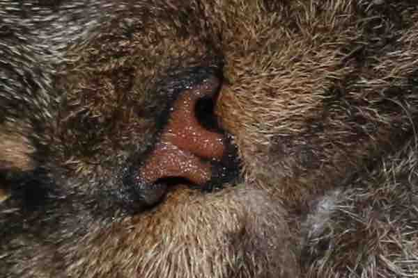
600px wide, 3:2 width to height ratio, 72dpi, low-quality jpg
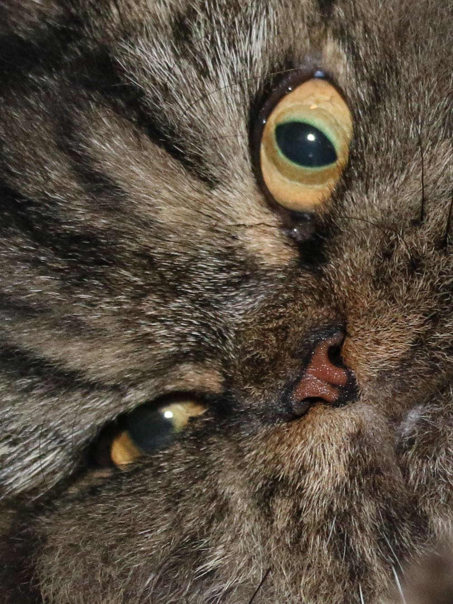
1000px wide, 3:4 width to height ratio, 600dpi, medium-quality jpg
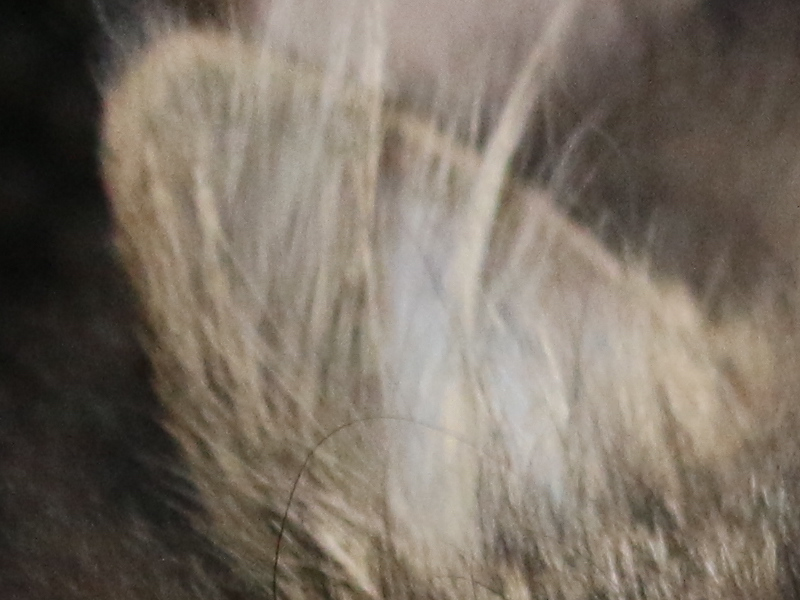
800px wide, 4:3 width to height ratio, 300dpi, png
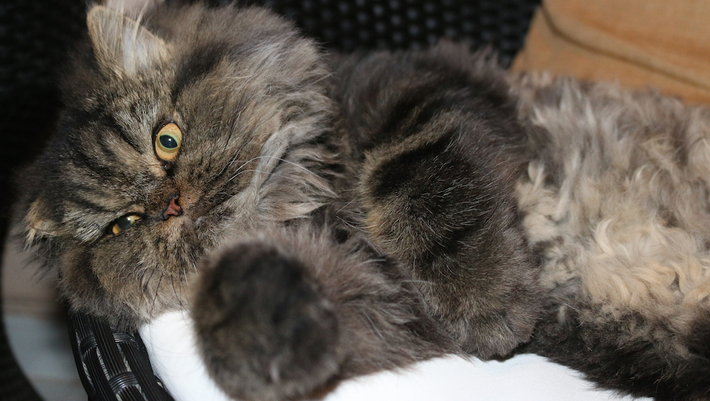
1000px wide, 16:9 width to height ratio, 600dpi, high-quality jpg
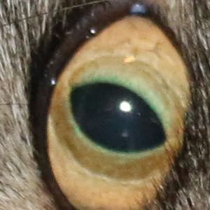
300px square, 150dpi, medium-quality jpg
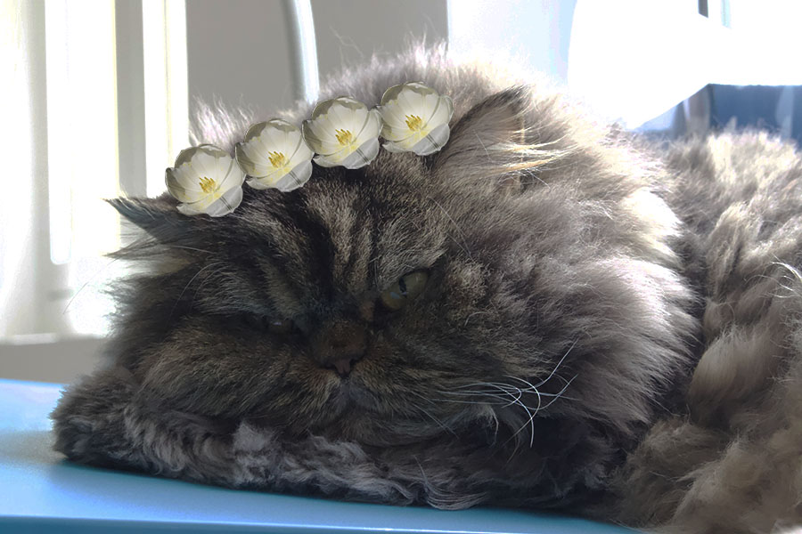
Casper had a flower crown edited onto his head using another photo from the same assignment. 🌸 🌺 🌷
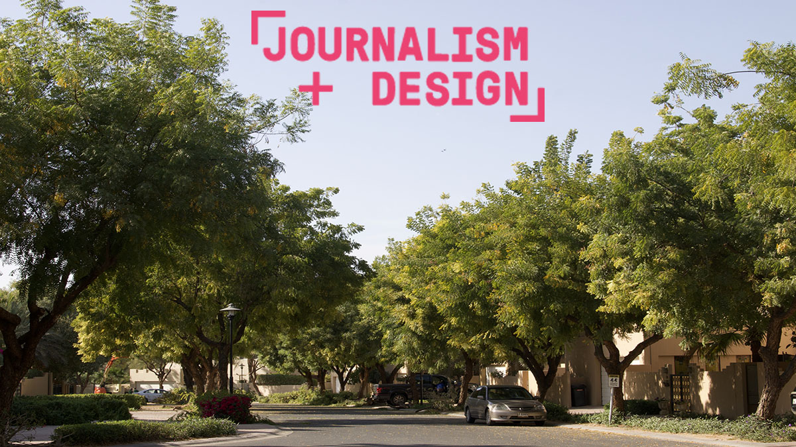
This landscape photo has the Journalism & Design logo edited onto the top.
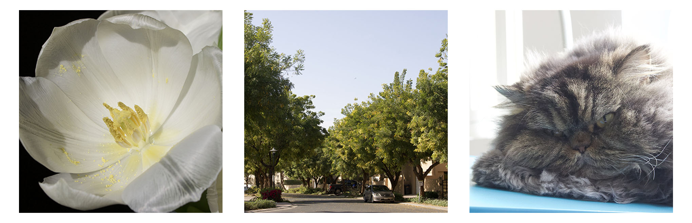
I used three of the photos from the same assignment and made them into a banner.
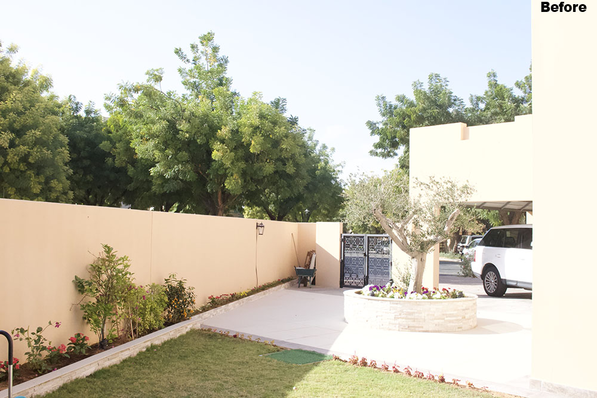
This is an overexposed image before it is fixed in photoshop.
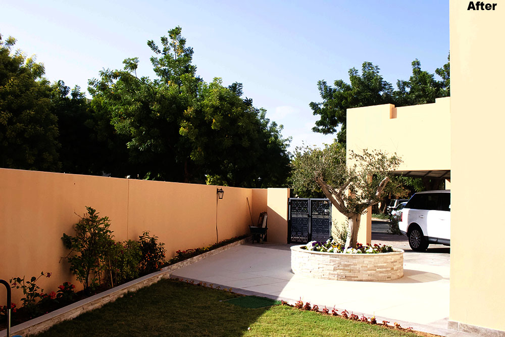
This is an overexposed image after it is fixed in photoshop.
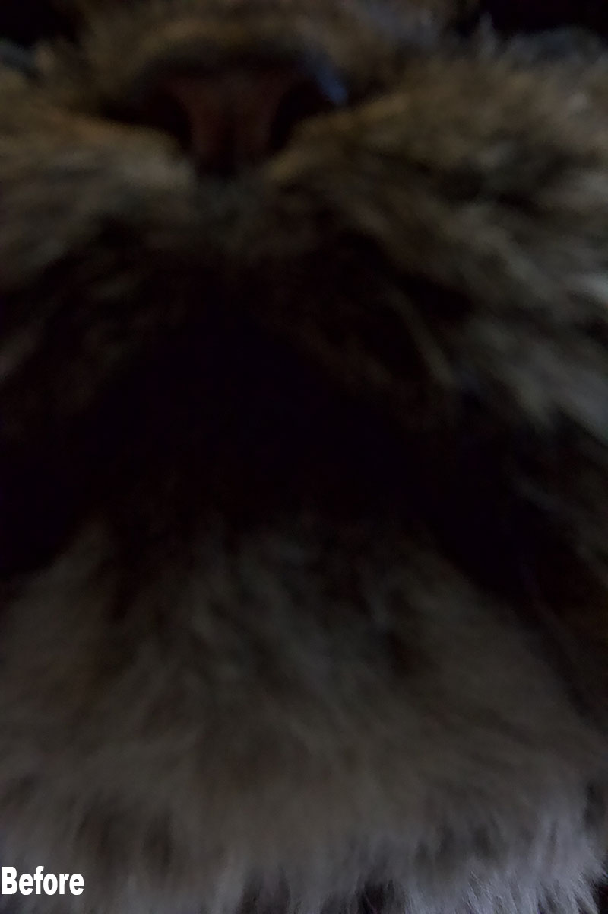
This is an underexposed photo before it is edited in photoshop.
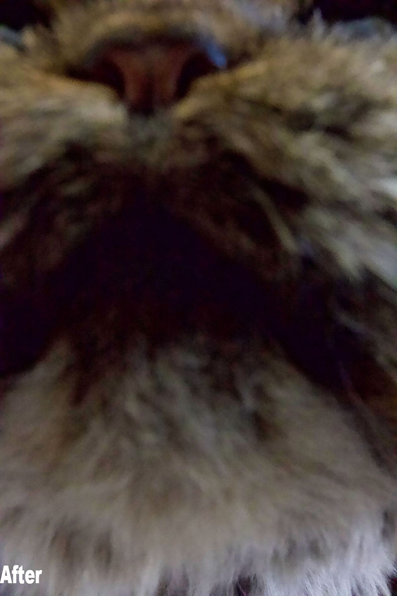
This is the same underexposed image after being fixed through photoshop.